What a nucleus looks like
Nucleons in a mean field: their orbitals, the shells they close, the shapes the nucleus takes when it stretches.
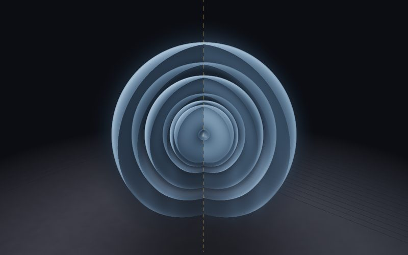
shell modelSpherical shell model
Single-particle levels of any nucleus in a Woods-Saxon well, each orbital drawn as a lit 3D density, against measured separation energies and ground-state spins.
²⁰⁸Pb →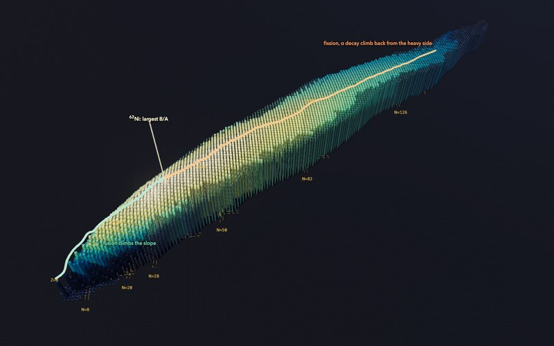
live fitBinding energy
B/A across the nuclide chart and the five-term liquid drop fitted live to AME2020; where it fails, the magic numbers.
²⁰⁸Pb →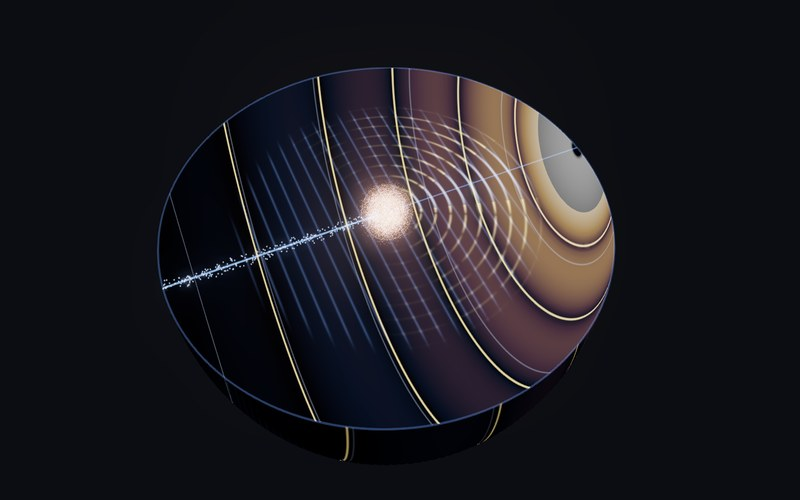
electron scatteringThe size of the nucleus
Electrons diffract off the charge cloud: form factors, measured densities and 908 charge radii.
²⁰⁸Pb →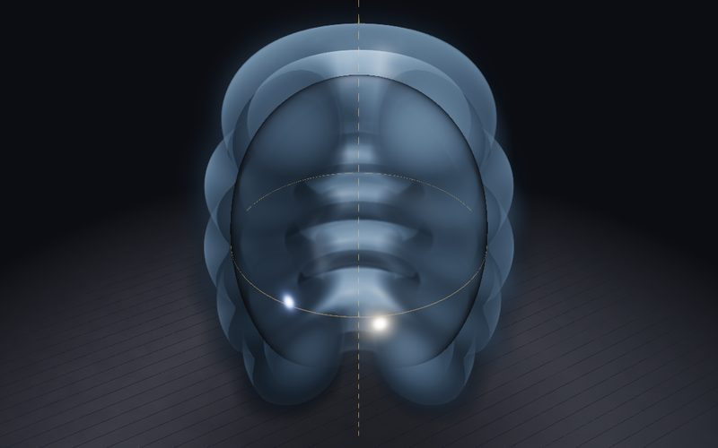
NilssonDeformed nuclei
Stretch or flatten the well and watch each level split into its projections on the symmetry axis.
Nilsson diagram →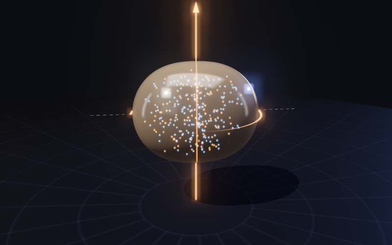
spin itCollective motion
Rotors and vibrators: R₄/₂ over 610 even-even nuclei, and backbending in ¹⁵⁸Er.
¹⁶⁶Er →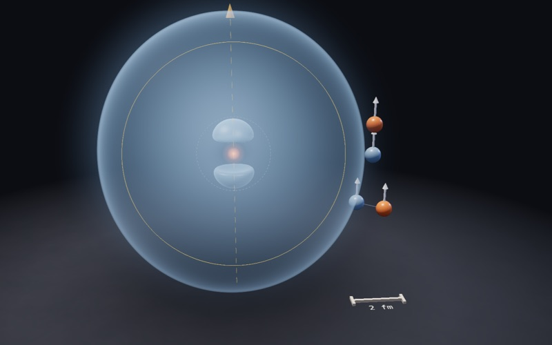
the NN forceThe deuteron
One proton, one neutron, 2.2 MeV: the tensor force pulls it into two lobes or a ring, depending on its spin, and it spends most of its time outside its own force.
²H, Argonne v18 →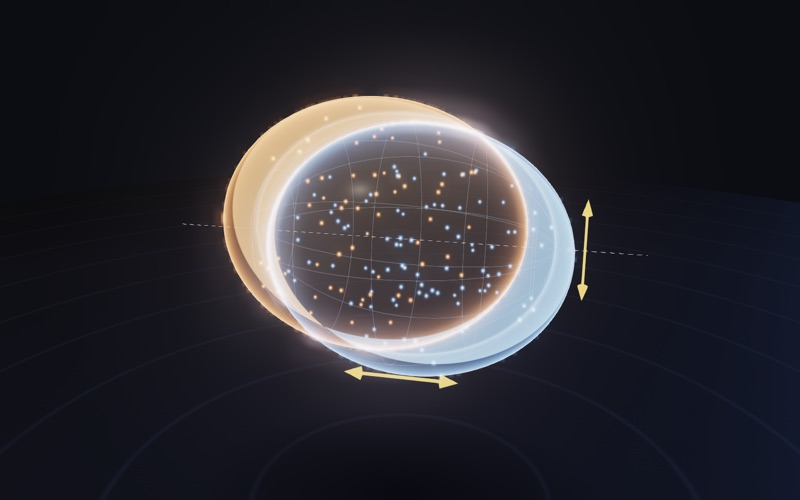
photoabsorptionGiant resonances
Protons swing against neutrons: the GDR, its two peaks in deformed nuclei, and the TRK sum rule against Livermore and Saclay data.
¹⁶⁵Ho →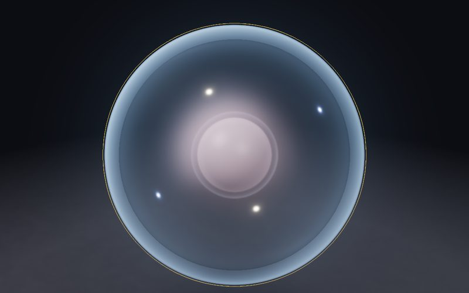
weak bindingHalo nuclei
A nucleon bound so weakly its cloud reaches as far as a lead nucleus.
¹¹Be →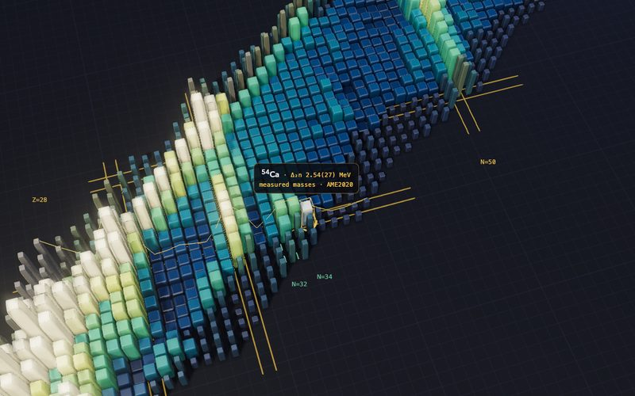
massesMagic numbers
Shell gaps read straight off measured masses, and where they move far from stability.
⁵⁴Ca →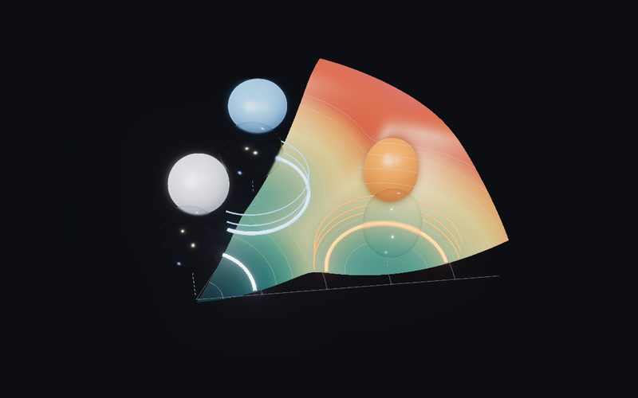
shapesShape coexistence
One nucleus, three shapes within 700 keV: spherical, oblate and prolate ¹⁸⁶Pb.
¹⁸⁶Pb →Probing the nucleus by hitting it
Waves that bend and get absorbed, projectiles that break up, nucleons knocked out in flight.
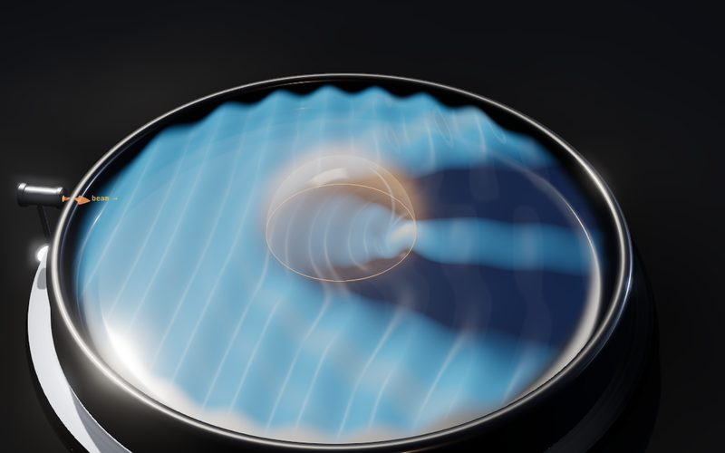
optical modelElastic scattering
A neutron, proton, deuteron or alpha wave meeting a nucleus: the wave itself, the shadow behind it, and cross sections against measured data.
p + ²⁰⁸Pb, 30 MeV →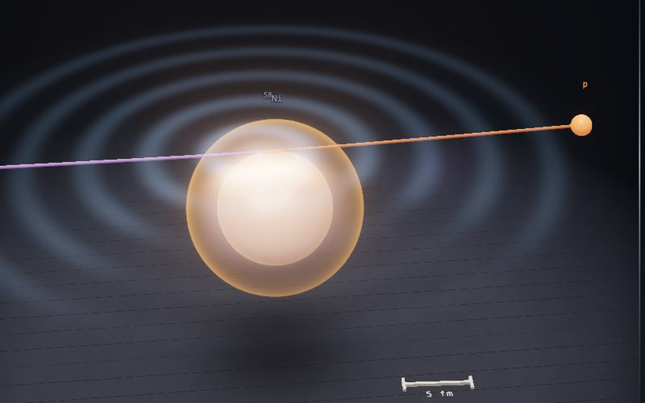
weakly boundInclusive breakup
A deuteron or ⁶Li breaks up near the target: elastic breakup, nonelastic breakup, incomplete fusion.
d + ⁵⁸Ni →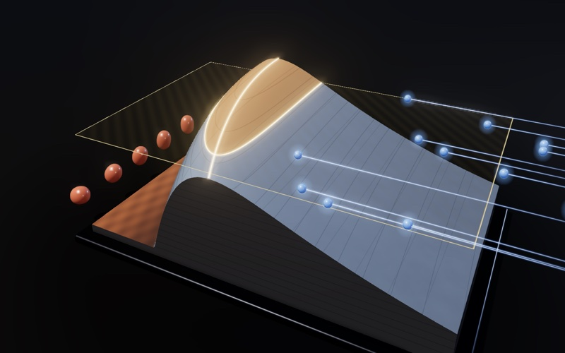
barrier distributionsFusion at the barrier
Why heavy nuclei fuse far below their Coulomb barrier: a deformed or vibrating target splits one barrier into many, and d²(Eσ)/dE² shows the distribution.
¹⁶O + ¹⁵⁴Sm →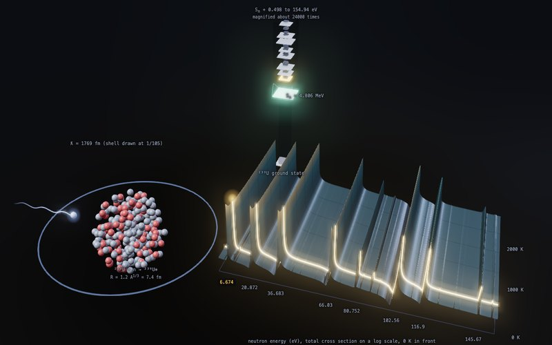
compound nucleusNeutron resonances
The forest of ²³⁸U levels a few eV above S_n: Breit-Wigner lines, Doppler broadening, level repulsion.
6.67 eV →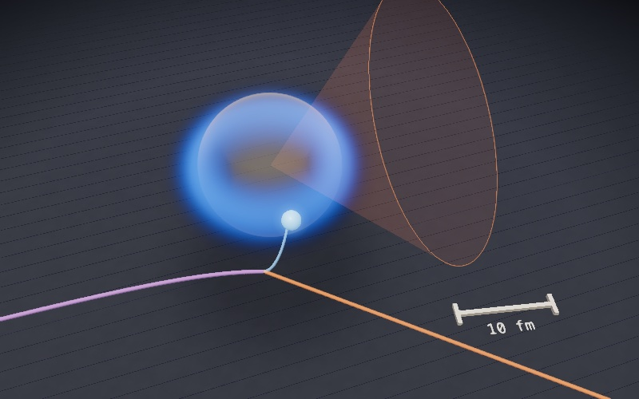
(d,p) · SOne-nucleon transfer
A deuteron leaves its neutron in ²⁰⁹Pb: momentum matching, FRESCO curves, spectroscopic factors and how they move with the model.
²⁰⁸Pb(d,p) →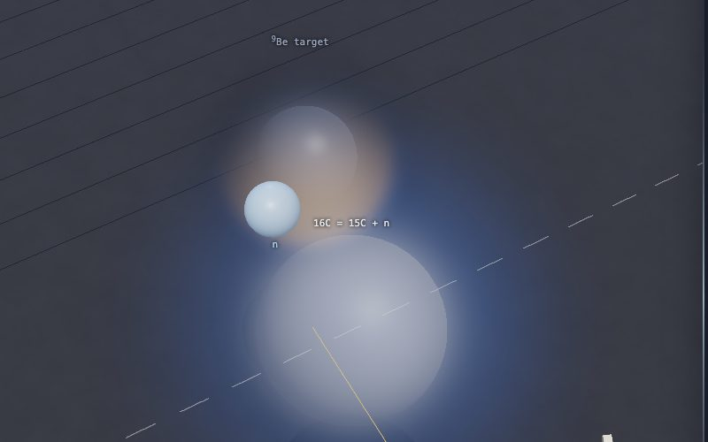
fast beamsOne-nucleon knockout
A fast projectile grazes ⁹Be and loses a nucleon from the tail of its orbital.
measured cases →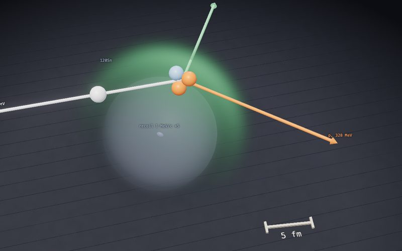
(p,2p), (p,pα)Quasi-free knockout
A 392 MeV proton knocks out a nucleon or an alpha cluster, and where in the nucleus that can happen.
¹²⁰Sn(p,pα) →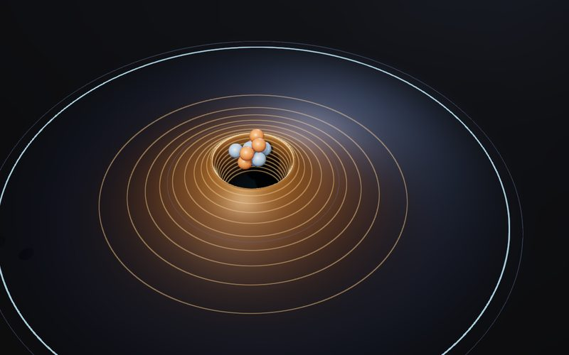
indirect methodThe Trojan Horse Method
A nucleus carries a reaction partner past the Coulomb barrier, so stellar energies can be reached.
¹⁰B(p,α), ¹²C+¹²C →How nuclei fall apart
Tunnelling out through the Coulomb barrier, the weak step down the valley of stability, photons shedding excitation, and a charged drop stretching over its saddle into two.
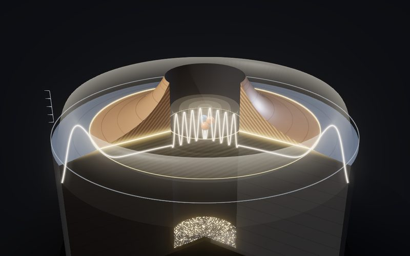
tunnellingAlpha decay
An alpha particle leaks through the Coulomb barrier; one formula follows measured half-lives over thirty decades.
²¹²Po →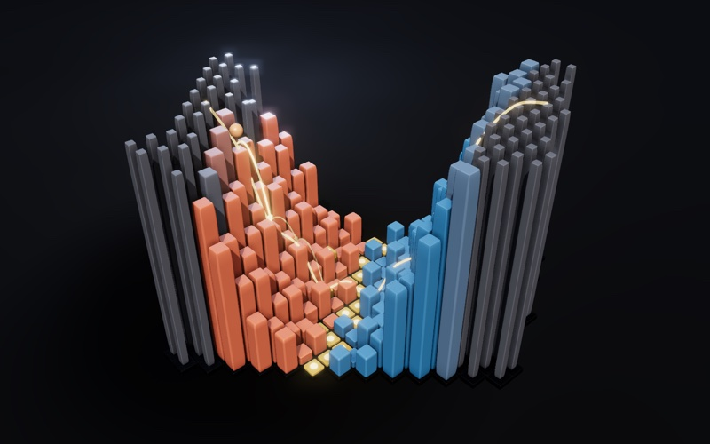
weak interactionBeta decay
Nuclei step down the valley of stability, sharing the energy with a neutrino; the Fermi function, f, and the superallowed ft values.
⁷⁴Rb →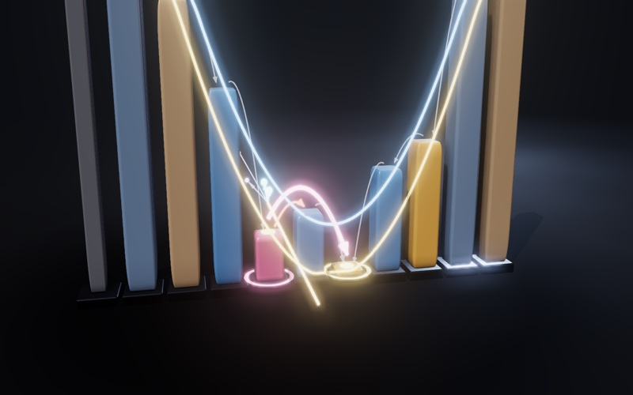
2νββ / 0νββDouble beta decay
Two neutrons become two protons at once, with two antineutrinos or none: Q_ββ, the spectrum against detector resolution, and m_ββ.
¹³⁶Xe →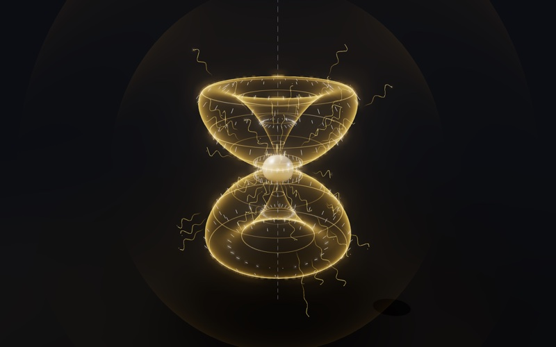
multipolesGamma decay
The shape of a photon's escape: multipole patterns, Weisskopf rates over 36 decades, isomers that wait years, and the collectivity of B(E2).
⁶⁰Ni →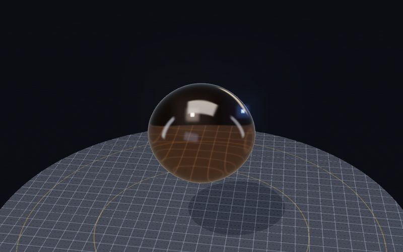
liquid dropFission
A charged drop stretching over its saddle point and snapping in two, and what it takes to get it there.
²³⁸U →Where the elements come from
Fusion in a narrow energy window inside stars, the reaction that decides carbon or oxygen, neutron captures that build gold, and stars made of nuclear matter.
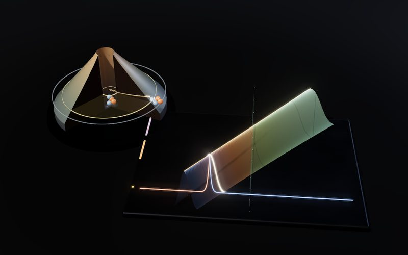
Gamow windowFusion in stars
The Coulomb barrier, the Gamow window sliding with temperature, and how far below the lowest measurements stars burn.
pp chain to helium burning →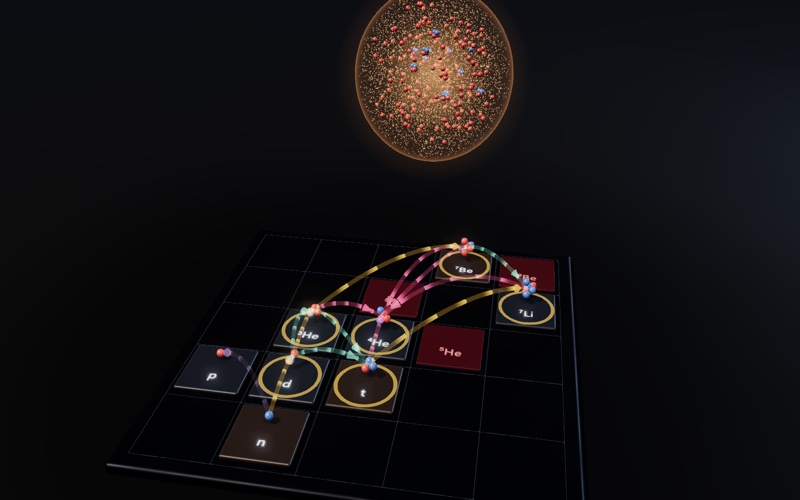
first three minutesBig-Bang nucleosynthesis
The cooling universe freezes its neutrons, waits out the deuterium bottleneck and puts them into ⁴He; the light elements against η, with Planck and the lithium problem.
t = 180 s →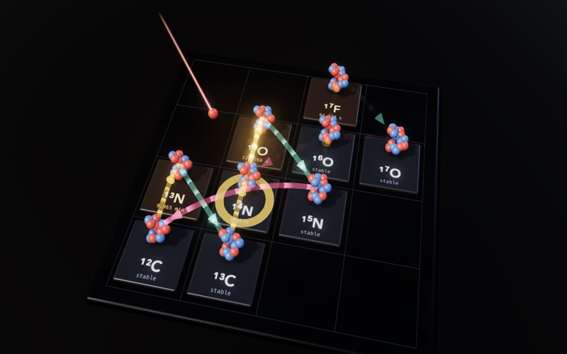
pp vs CNOHydrogen burning
The pp chains and Bethe's CNO cycle on the nuclide chart, with the slow step that sets each pace and the neutrinos Borexino caught.
CNO cycle →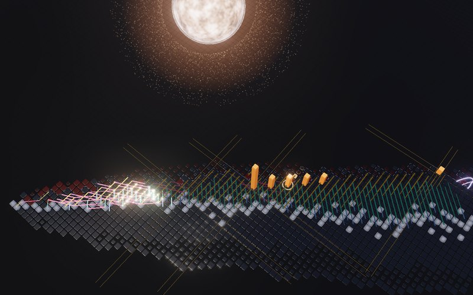
rp processX-ray bursts
A neutron star's thermonuclear flash: the rp path to the drip line, waiting points, and GS 1826−24's light curve.
rp path →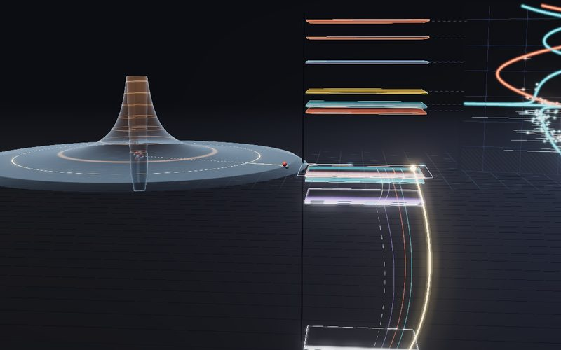
the holy grail¹²C(α,γ)¹⁶O
Needed at 300 keV, measured only above 0.9 MeV, steered by two states just below threshold.
¹⁶O levels →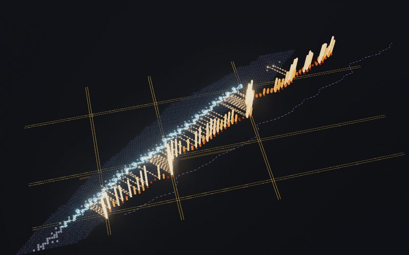
s and r processMaking the heavy elements
Neutron captures along stability and far from it, and why the r-process peaks sit below the s-process peaks.
nuclide chart →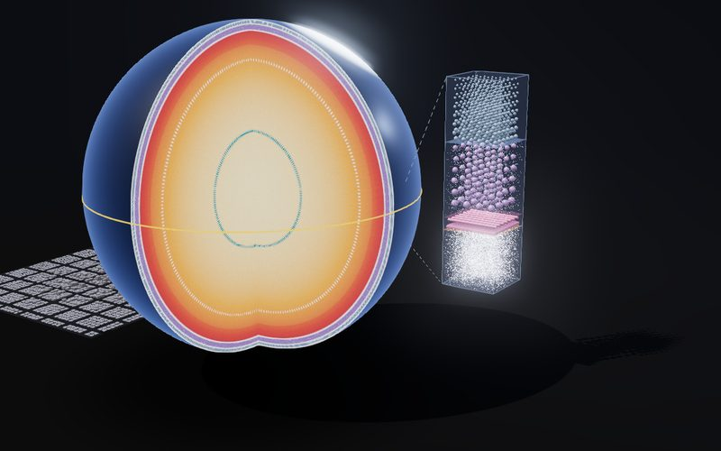
dense matterNeutron stars
A 1.4 solar-mass star cut open at published layer depths, beside a city for scale.
crust to core →Machines and detectors
How rare-isotope beams are made at FRIB, GSI/FAIR, RIKEN and RCNP, and how a silicon telescope tells particles apart.
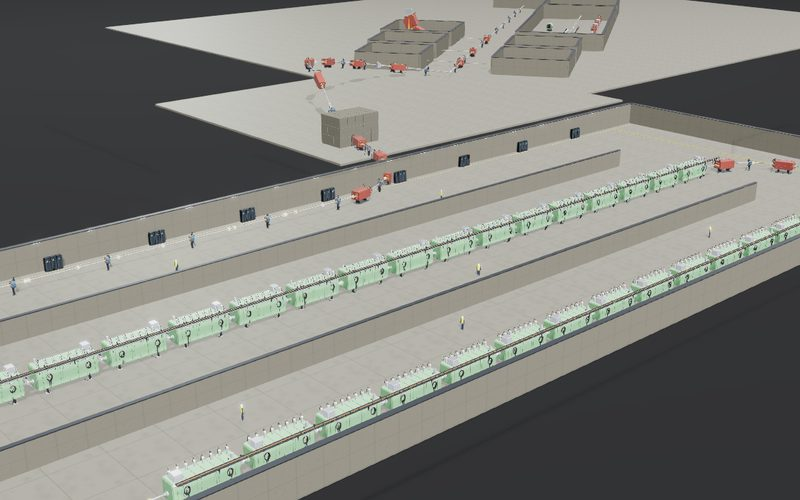
facilitiesAccelerators
A folded superconducting linac, charge stripping, focusing and in-flight separation, with FRIB as the worked example and three more laboratories to compare.
FRIB, GSI/FAIR, RIKEN, RCNP →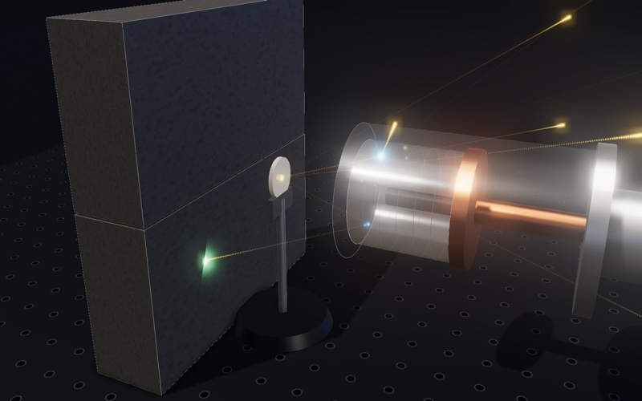
live Monte CarloGermanium gamma spectrometer
Photoelectric, Compton and pair production in an HPGe crystal, and the spectrum they leave: peak, edge, escapes, backscatter.
⁶⁰Co →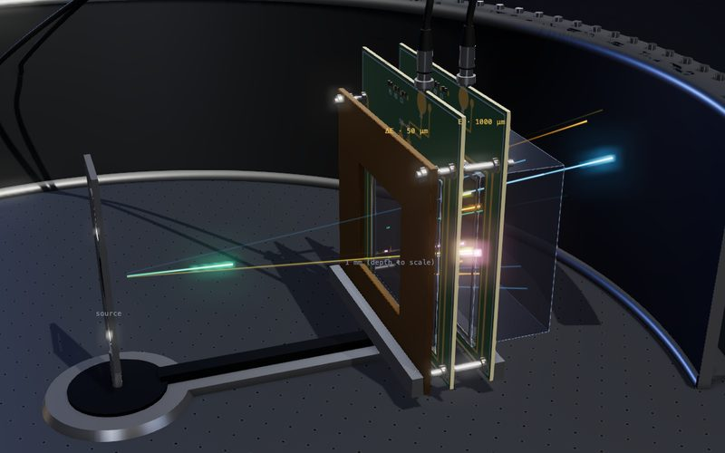
detectorsΔE-E telescope
Energy loss in two silicon layers, the particle-identification bands, and punch-through.
silicon telescope →What you see
Every scene is drawn from physics: computed densities and levels, exact kinematics, or published values. Colours, glow and magnification are presentation, and each page says which.
Where numbers come from
Simple models run live in the page and are checked against independent calculations; everything else is taken from cited evaluations and papers, shown as published.
The map
The nuclide chart behind this page shows all ground states of NUBASE2020; the full interactive chart lives at vibeinscience.com.